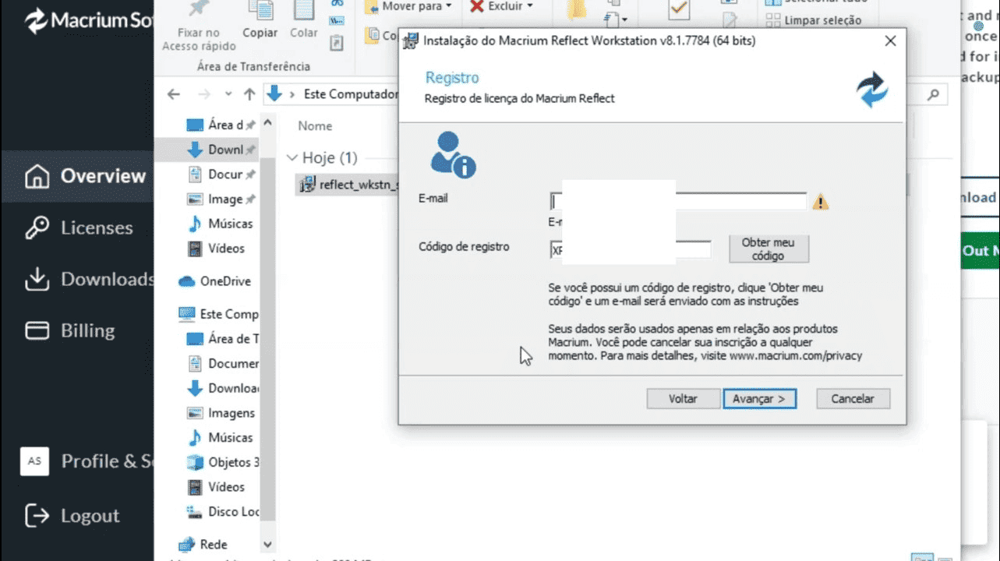
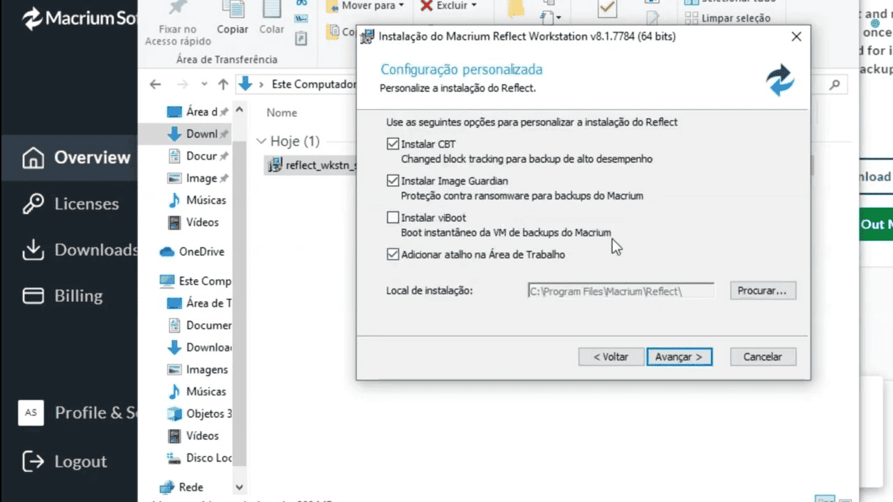
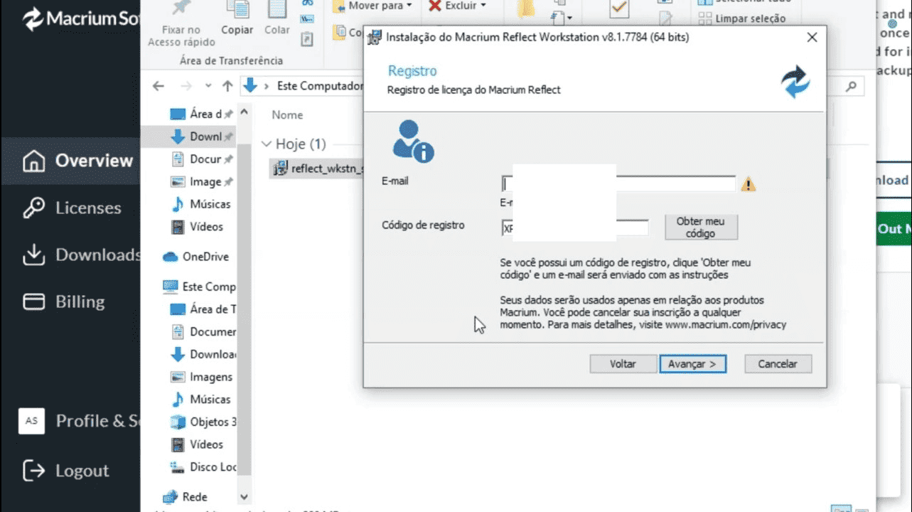
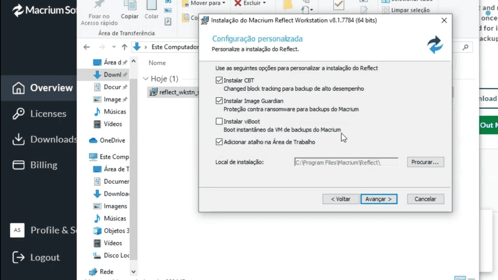
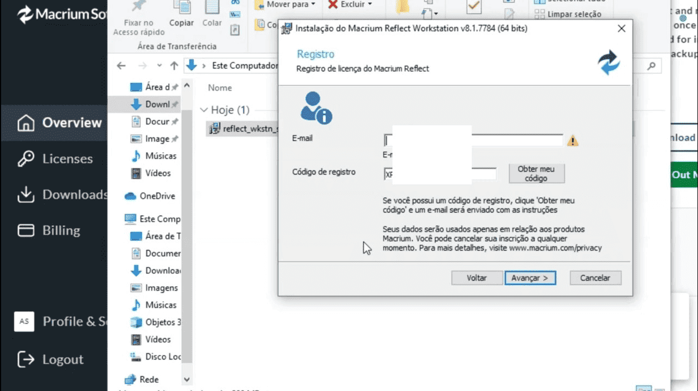
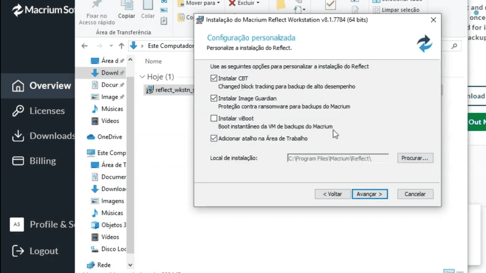
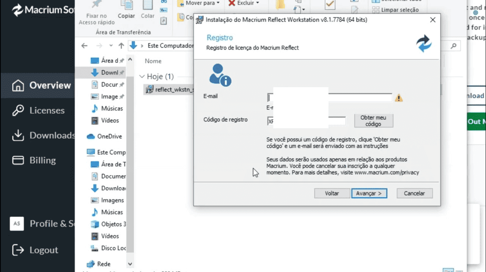
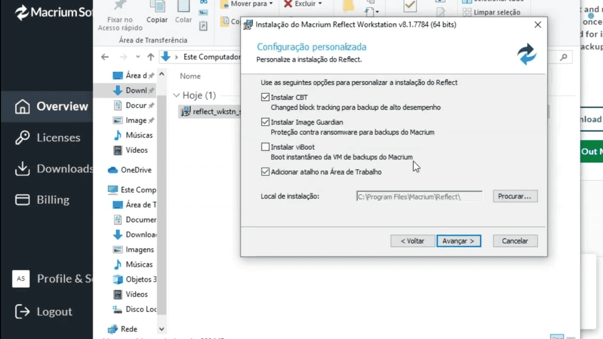

 



O Macrium Reflect é um software gratuito (versão Home Free) que permite fazer backups de disco completos e também clonagem de HD ou SSD, facilitando a migração para outro disco sem perder dados.
Acesse o site oficial: https://www.macrium.com/reflectfree e baixe a versão gratuita.
Instale normalmente no seu computador.
Abra o Macrium Reflect. Na tela inicial, ele mostrará todos os discos e partições do seu computador. Selecione o HD que você quer clonar.
Conecte o novo HD ou SSD no computador. No Macrium Reflect, selecione o disco de destino para onde será feita a cópia. Verifique se ele tem espaço suficiente para todos os dados.
Após o processo terminar, desligue o computador, remova o HD antigo e teste o novo HD ou SSD como disco de inicialização.